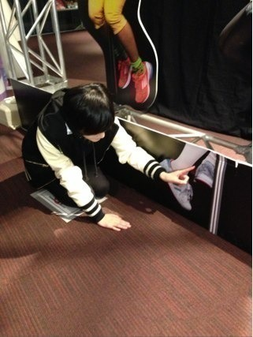
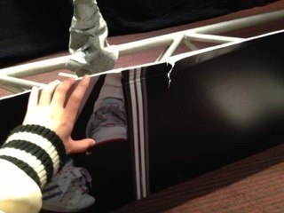
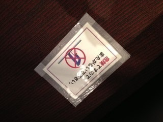
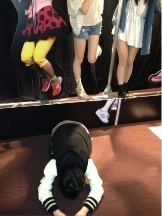
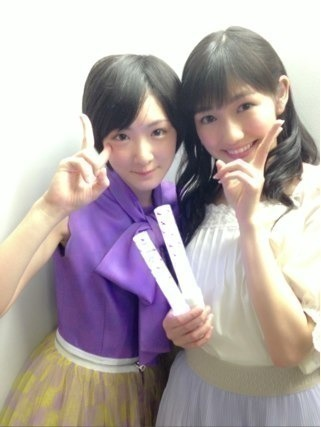

3日目終わりました！
来てくださった皆さんありがとうございます！
昨日、いろいろ考えて、全て吹っ切れて新しい気持ちで取り組みました。
今日は一回目沢村小坊主
二回目は野木美咲子になりました！
投票してくださった皆様ありがとうござます！
プリンシパルって、いろんなものが直接分かるんですね。
まぁ、きついって思う所もあるけど、認めてもらえた時の喜びは素直に嬉しいです！
明日からは演技にもっと集中して高めていけるように頑張りたい。
結果がどうであれ、その時輝いたかが大切なのかな？
ずっと続く訳じゃない。
この一瞬の勝負に本気を出す。
気持ちも負けないで！
あ。
みなさんに謝らなければならない事があります。
実は‥‥
ロビーにあるパネルで記念撮影してましたら。
うおっ
腕疲れた！
さぁおりましょ〜
ぐしゃっ！
ん？
ぐしゃっ！ ？
えっ
ああっ！
(°_°)

踏んじゃった！
壊してしまった！
うあああああああ( ；∀；)
ごめんなさい！
大切なものをきずつけてしまた！
あぁ、

ちゃんと

て書いてあったのに。
みなさん！マジで

すいまっせーん！
ほんとに！
すいまっせーん！
明日も多分残ってると思うので、ぜひ生駒ちゃんがやっちまった現場をみて、気をつけてメンバーと写真を撮ってください。
あぁ
作ってくださったかた本当にすいませんでした。
ちゃんとスタッフさんに報告とごめんなさいしたので大丈夫だと思います！
いこまきずとでも呼んでください。
そしてっ！
今日！
まゆゆさんが来てくださいました〜！ヽ(・∀・)ノ

ツーショット！
でへへっ
来てくださるのは本当に嬉しくて、ありがたいです！
また来てくださいねヽ(・∀・)ノ
では
今日は休みます！
へばなっ！